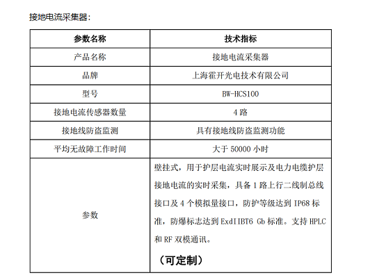
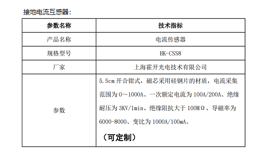

-
-
- 产品名称：高压电缆护套接地环流在线监测系统
- 产品类型：在线监控设备
- 生产商：霍开自研开发
- 功能：高压电缆护套接地环流在线监测
-
- 产品详情
- 高压电缆的金属护套是电缆的重要组成部分，当缆芯通过电流时，会在金属护套上产生环流，外护套的绝缘状态差、接地不良、金属护套接地方式不正确等等都会引起护套环流异常，严重时会威胁电缆运行安全。当电缆金属护套环流出现异常时会造成电缆绝缘局部高温损耗发热，加速绝缘老化，降低电缆使用寿命，严重时会导致电缆发生直接击穿接地故障。护套环流异常也会直接影响电缆线路的载流量，产生较大的电能损耗，浪费电能、减少经济效益。
- 本公司生产的电缆护套环流监测系统由护套环流传感器、护套环流采集器等组成，适用于 6.6kV 及以上的输配电力电缆护套环流在线监测，能实时监测高压电缆线路接地电流异常情况，还可降低电缆线路交叉互联线、接地线、交叉互联箱、接地箱等被盗的风险。支持远程查看功能，给维护人员手持式设备上发送实时监测数据。很大程度上减少了电缆运行维护人员的工作量，对电流异常的检测点，能够做到实时关注，达到预防突发事故的目的。具有在线监测、自动报警、远程查看、信息记录分析、支持CT取电等功能。
- 系统主要配置及参数:

